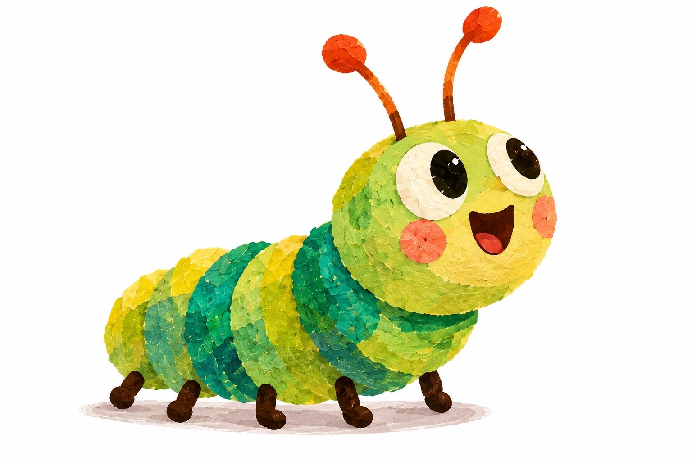
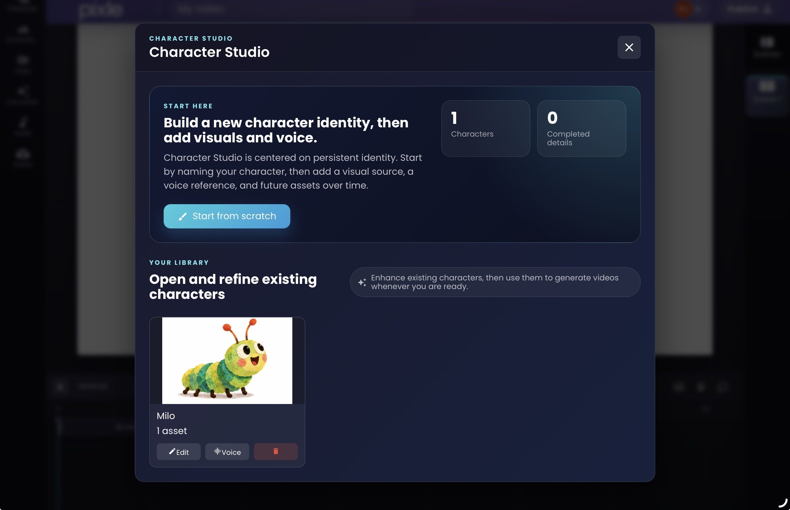
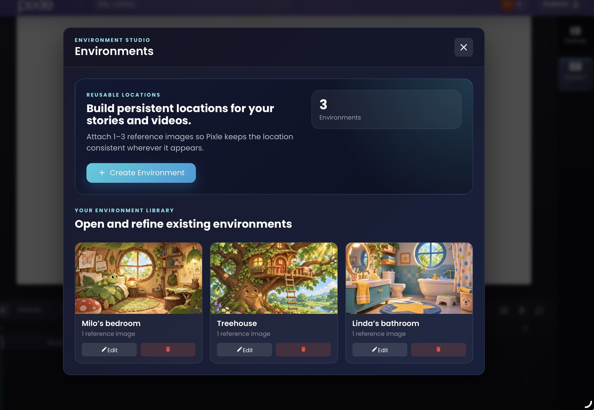
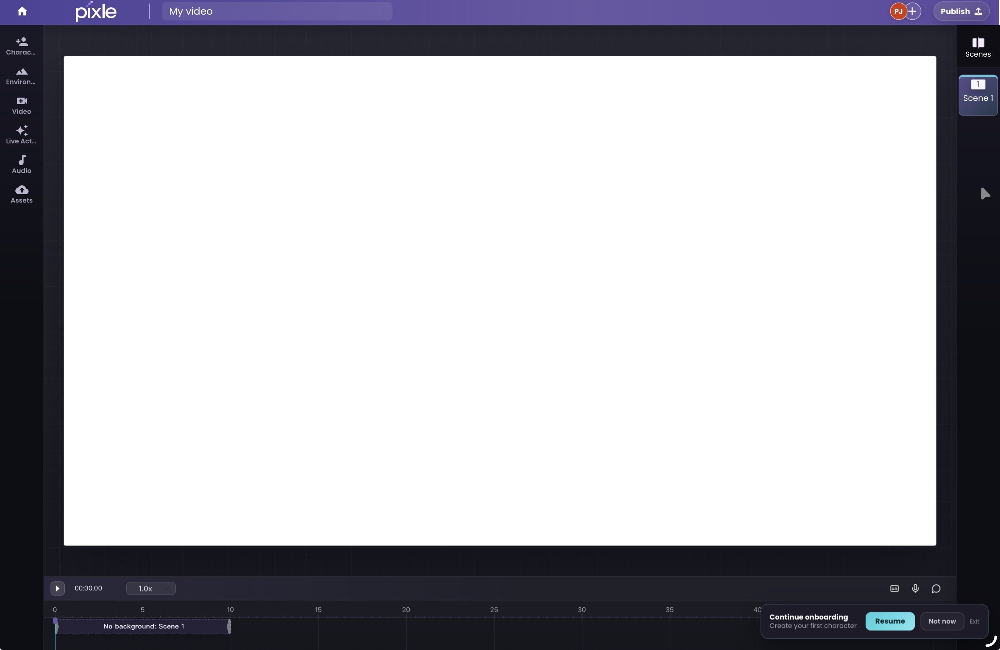

Pixle vs AI Video Models: Why Animation Needs More Than a Prompt
A great AI-generated clip is only the beginning. Learn why repeatable characters, worlds and editing workflows matter for animation.
One character.
Many stories.
One creative workspace.

It's easier than ever to generate a few seconds of extraordinary-looking video. Write a prompt, upload a reference image, select a model and watch a scene come to life.
But imagine you're creating a children's animation series. Your main character needs to look familiar in episode one, episode five and episode twenty. Their voice must feel like the same voice. The bedroom, garden and treehouse should look like places the audience recognises. Every generated scene needs to fit into a larger story.
That's the difference between making an AI video and producing animation.
Pixle is built specifically around the second problem: helping creators turn original characters, environments and stories into repeatable animated content.
First, an important distinction: a video model isn't the same as an animation studio
An AI video model generates moving footage from inputs such as text, images or video. Models from companies such as Google and other AI labs can produce sophisticated visuals, camera movement, sound and character performances.
An animation production workflow has additional responsibilities. It must organise characters and scenes, preserve creative decisions, make revisions manageable, assemble a sequence, support audio and deliver a finished video.
These categories aren't mutually exclusive. Runway offers character references, performance tools and timeline-based editing; OpenArt Director supports multi-scene films and recurring characters; and Google Veo can use reference images to help preserve character appearance. They deserve credit for those features.
Pixle's difference is its focus: a workspace organised around creators who repeatedly make animated stories, rather than around a single model output or a broadly defined video-production job.
| The question | A video-generation task | An animation-series task |
|---|---|---|
| What are you making? | A shot or short sequence | A story or episode within a larger world |
| What must stay consistent? | The current output | Characters, voices, locations and style across projects |
| How is work organised? | Prompts and clips | Reusable creative assets, scenes and a timeline |
| What counts as success? | A strong generated result | A complete, coherent video you can publish |
| What happens next? | Generate another clip | Return to the same cast and world for another episode |
1. Pixle starts with characters, not just prompts

In a one-off video, describing a character in a prompt may be enough. In an animated series, you need to know which character you're bringing back.
Consider Milo, a cheerful green-and-yellow caterpillar with large eyes, orange-tipped antennae and a distinctive layered illustration texture.
If you recreate Milo with a fresh description for every shot, small details may drift. His eyes, proportions, body colours or antennae could change as the story progresses.
Pixle's Character Studio lets creators save a named character identity, attach visual references and work with voice references. When creating another scene, you can return to the saved character instead of rebuilding the description from memory.
That makes the character an ongoing creative asset, not simply a successful prompt from yesterday.
Why this matters for animation: recurring characters are the foundation of children's series, educational videos, independent cartoons and other character-led storytelling. A reusable character library helps make production more organised and repeatable.
It doesn't guarantee perfect visual replication on every generation. Creators still need to review outputs, especially in challenging camera angles and complex movements.
2. Animated worlds need to stay familiar

An animated character doesn't exist in isolation. A series builds familiarity through its settings, too.
Milo's bedroom should remain Milo's bedroom when he returns there. If a story uses the same treehouse in multiple episodes, that treehouse shouldn't become a completely different building each time.
With Environment Studio, Pixle allows creators to save reference images for persistent locations and bring them back into later scenes.
This is useful for recurring locations such as a classroom, a kitchen, a forest or a spaceship interior. These places become a library that can grow with the series.
Why this matters for animation: visual continuity helps viewers recognise the story world. It also gives creators an organised starting point when developing a new episode, rather than repeatedly inventing the same background.
3. Pixle connects character creation to scene generation

Many creators end up working across a patchwork of tools: one place for reference images, another for video generation, another for narration and a separate editor to assemble everything.
Pixle's Character Image to Video workflow brings several of those decisions together. Creators can select saved characters, optionally choose a saved environment, describe the scene and its movement, select a style and work with narrator-voice settings.
The interface includes an AI script-planning step before generation. That creates an opportunity to inspect the proposed action and correct misunderstandings before making the clip.
For example, imagine this scene:
Character: Milo, using his saved identity.
Location: Milo's treehouse, using the saved environment.
Action: Milo hears a noise overhead, looks up and takes two curious steps towards the ladder.
Camera: A gentle push-in as he reacts.
Direction: Keep his original colours, antennae, facial features and layered illustrated appearance.
The point is not that a prompt becomes unnecessary. It's that the prompt sits inside a larger, reusable creative context.
4. A finished story needs a timeline, sound and pacing

Even if every generated shot looks beautiful, the finished video may still feel disconnected. Scenes need to follow the script, pauses need to feel intentional, and sound has to serve the story.
Pixle's Creative Editor provides a timeline for arranging scenes and working with audio and uploaded assets. This lets creators bring generated material into a coherent sequence without treating each clip as an unrelated file.
For a children's story, the editor becomes the place to make storytelling decisions: Does Milo's surprised expression last long enough? Does the next shot begin too abruptly? Is the narrator speaking before the audience can understand what has happened?
Why this matters for animation: editing is not simply a final administrative step. It is part of directing the performance and shaping the viewer's experience.
5. Voice, collaboration and publishing belong in the workflow
Animation production doesn't end when the visuals are generated.
Pixle supports reusable character voice references and narrator-voice settings, while its editor brings audio into the production process. Voice output and synchronisation can still depend on the generation method, so performances need checking.
For creators working in teams, Pixle also offers project collaboration and review. That can be especially helpful when a writer, director, animator and producer all need to contribute to the same story.
When a video is ready, Pixle's website describes direct YouTube publishing, including titles, descriptions, visibility and audience settings.
These are practical details, but they matter. A tool that helps you generate a scene is useful; a workspace that helps you prepare and deliver an episode is useful in a different way.
6. Pixle can turn live-action motion into animation
Not every animated scene has to begin as a text prompt.
Pixle also provides a live-action-to-animation workflow: upload footage, choose an animation style and transform the motion into an animated visual treatment.
For creators, that opens another route to expressing movement and performance. A live-action reference can help communicate the action you're trying to achieve, while the final animated result still needs creative review for consistency and quality.
This isn't a claim that competing products lack video transformation; several do. It's another production capability available within Pixle's animation-oriented workspace.
What makes Pixle a stronger fit for recurring animation?
Pixle is not automatically the best choice for every kind of AI video. The better question is: Which product is organised around the work you need to do repeatedly?
| If your priority is… | What to evaluate |
|---|---|
| One spectacular cinematic clip | Compare video-generation models and shot controls |
| A performance-driven character shot | Test reference and motion-transfer tools, including Runway |
| A multi-scene film directed conversationally | Explore OpenArt Director and similar workflows |
| A recurring animated series with reusable characters and locations | Test Pixle's character, environment and timeline workflow |
| A quick marketing animation or template | Consider a social-video or explainer editor |
Pixle is particularly compelling when you're producing more than one story with the same creative assets. Its product decisions centre on keeping those assets useful from scene to scene and episode to episode.
That is a workflow advantage, not proof that any one underlying model produces higher-quality animation than another.
Milo: from one character to a story world
Milo is a practical example of the kind of creator workflow Pixle is building for.
The project has an original character reference, a saved Milo identity in Character Studio, reusable locations including Milo's bedroom and a treehouse, and a finished animated short called Milo and the Missing Moon.
The completed film demonstrates what an animated story created with Pixle can look like. It is not a controlled benchmark against another video platform, and the film alone does not establish that a multi-episode series has already been produced.
But it illustrates the larger idea: Milo is not just a clip. Milo is a character who can return in new stories.
That is the difference between accumulating AI video files and building a recognisable animated universe.
How to test whether Pixle is right for your animation workflow
Before committing to a longer series, try one small production experiment:
- Save one original character in Character Studio, including an approved visual reference.
- Create two recurring locations in Environment Studio.
- Plan three shots: a close-up, an action shot and a scene in a different location.
- Generate and review each shot, checking the character's identity, motion and style.
- Arrange the clips on the timeline and add any required voice, music or sound.
- Assess the result: how much time, iteration and cost were required to achieve a finished sequence?
Run the same experiment with any other tool you're considering. Compare not only your favourite individual shot, but how easily you can build a coherent story and return to it later.
Frequently asked questions
Is Pixle an AI video model?
Pixle is an AI-native animation platform and workspace, rather than simply a standalone video-generation model. It brings character and environment references, scene creation, editing and publishing-related tools together for creators of animated content.
Why use Pixle instead of only using an AI video model?
If you need one isolated shot, a video model may be sufficient. If you are developing recurring characters and longer animated stories, Pixle gives those scenes a more structured production workflow, including reusable character and location libraries and a timeline editor.
Can other AI video platforms create consistent characters?
Yes. Google Veo supports character reference images, Runway offers reference and performance tools, and OpenArt has character and multi-scene creation features. What varies is how those capabilities fit into your full project workflow and how reliably they work for your particular content.
Does Pixle guarantee character consistency?
No generative animation workflow should be assumed to deliver perfect consistency every time. Reusing saved references helps establish a stable visual identity, but creators should inspect each generation and revise material that doesn't meet their standards.
Is Pixle only for children's animation?
No. Pixle's animation-first workflow can also suit educational content, independent shorts, recurring YouTube series and small animation teams. It is especially relevant where character and environment reuse matter.
Can I use my own intellectual property with Pixle?
Pixle supports creator-supplied visual and other creative assets. You should only upload material you own or have the necessary rights to use, and review the applicable terms for generated outputs and distribution. No software platform can automatically guarantee the legal status of every AI-generated element.
The future of animation is bigger than the next video model
Video-generation models will keep improving. They will become better at movement, style, dialogue and consistency. That's good news for creators.
But a better model on its own doesn't eliminate the work of building a character, remembering their world, directing their scenes or bringing a story to completion.
The opportunity is to connect powerful AI generation with an animation workflow that understands what creators are trying to make over time.
That's what Pixle is built around.
Not just another prompt. Not just another impressive clip. Characters worth returning to. Worlds worth revisiting. Stories worth telling.
Start creating animated stories with Pixle
Continue learning
- How to Create Consistent AI Characters Across Animated Scenes
- How to Make an Animated YouTube Series Using AI
- How to Turn a Script into an Animated Video
- How to Create Recurring Animated Characters
Sources and editorial note
This article is published by the Pixle Team and makes a product-positioning argument, not an independent performance ranking. Feature descriptions were checked against official documentation on 12 November 2026; actual results and product availability may vary.
- Pixle: Product and workflow overview
- Google DeepMind: Veo capabilities
- Runway: Creating with Runway Agent
- Runway: Gen-4 Image References
- OpenArt: Director Mode
About the author: The Pixle Team builds an AI-native animation workspace for creators producing original characters, animated stories and recurring series.